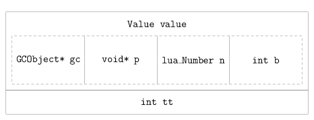

object
lua 是一种动态类型语言，类型不存在于变量中，而存在于值本身。
语言中定义了 8 种类型的值
- nil
- bool
- number
- string
- table
- function
- userdata
- thread
虽然章节名称为 object，和源代码的名称相同。 但是通常都翻译为“对象”，容易与 OOP 中的对象概念混杂在一起。 在本章，更乐意将其译为“值”。
从某种角度而言，程序就是“数据”与“操作数据的方法”。 所以第一步，先来了解 lua 中的值。
1 tagged value
章节开始就提到，类型存在于值本身。 在 lua 内部，用 TValue（tagged value）结构表示值的概念。
67: /* 68: ** Tagged Values 69: */ 70: 71: #define TValuefields Value value; int tt 72: 73: typedef struct lua_TValue { 74: TValuefields; 75: } TValue;
tt 表示值的类型，value 表示值的数据。 明显地，类型是值的一部分。

1.1 type
在 TValue 中，类型 tt 用 int 来标识，可以在代码中看到所有基础类型的宏定义
69: /* 70: ** basic types 71: */ 72: #define LUA_TNONE (-1) 73: 74: #define LUA_TNIL 0 75: #define LUA_TBOOLEAN 1 76: #define LUA_TLIGHTUSERDATA 2 77: #define LUA_TNUMBER 3 78: #define LUA_TSTRING 4 79: #define LUA_TTABLE 5 80: #define LUA_TFUNCTION 6 81: #define LUA_TUSERDATA 7 82: #define LUA_TTHREAD 8
完全对应 lua 中的 8 种类型。
同时定义了相应的宏，方便检测值的类型。
78: /* Macros to test type */ 79: #define ttisnil(o) (ttype(o) == LUA_TNIL) 80: #define ttisnumber(o) (ttype(o) == LUA_TNUMBER) 81: #define ttisstring(o) (ttype(o) == LUA_TSTRING) 82: #define ttistable(o) (ttype(o) == LUA_TTABLE) 83: #define ttisfunction(o) (ttype(o) == LUA_TFUNCTION) 84: #define ttisboolean(o) (ttype(o) == LUA_TBOOLEAN) 85: #define ttisuserdata(o) (ttype(o) == LUA_TUSERDATA) 86: #define ttisthread(o) (ttype(o) == LUA_TTHREAD) 87: #define ttislightuserdata(o) (ttype(o) == LUA_TLIGHTUSERDATA) 88: 89: /* Macros to access values */ 90: #define ttype(o) ((o)->tt)
细心如你，一定发现多出了一种 lightuserdata 类型。 这是由 userdata 细分出来的一种类型，目前先不做细致的解释， 之后到相应章节再具体分析。
1.2 value
TValue 中，数据 value 用 union Value 结构来表示，有效利用内存空间。
56: /* 57: ** Union of all Lua values 58: */ 59: typedef union { 60: GCObject *gc; 61: void *p; 62: lua_Number n; 63: int b; 64: } Value;
不同类型的数据使用不同的键值来存取。

2 detail
下面针对不同类型的值，详细分析。
2.1 nil
nil 是最简单的值，表示没有值。 由于只表示一个含义，故不需要 value，只用 tt 记录类型即可。
27: const TValue luaO_nilobject_ = {{NULL}, LUA_TNIL};
363: #define luaO_nilobject (&luaO_nilobject_) 364: 365: LUAI_DATA const TValue luaO_nilobject_;
可以看出，nil 值在内部是一个单例，所有使用 nil 的地方，都通过 luaO_nilobject 来引用。
2.2 bool
和其它语言一样，bool 值记录 true 和 false。
在存储的安排上，使用 tt 记录类型，用 value 中的 int b = 1/0 表示 true/false。
2.3 light userdata
light userdata 表示 c 和 lua 协同时，由 c 一方传入的数据。 lua 内部只负责引用，而不负责其生命周期管理，什么时候应该释放，lua 不清楚也不过问。
所以内部在用 tt 记录类型之后，只用 value 中 void * p 引用即可。
2.4 number
在默认设置下，lua 语言中所有数字都用 double 来表示。
495: /* 496: ** {================================================================== 497: @@ LUA_NUMBER is the type of numbers in Lua. 498: ** CHANGE the following definitions only if you want to build Lua 499: ** with a number type different from double. You may also need to 500: ** change lua_number2int & lua_number2integer. 501: ** =================================================================== 502: */ 503: 504: #define LUA_NUMBER_DOUBLE 505: #define LUA_NUMBER double
98: /* type of numbers in Lua */ 99: typedef LUA_NUMBER lua_Number;
类似的，用 tt 记录类型，用 value 中 lua_Number n 来记录 number 数值。
2.5 collectable
上面几种类型的值，内部表示都相对简单，剩余几种类型的数据就相对复杂一些。
- string
- table
- function
- userdata
- thread
有一点是共通的，它们同属于可 gc 的值（iscollectable）。
189: #define iscollectable(o) (ttype(o) >= LUA_TSTRING)
lua 内建了 gc 机制，其中关键的结构是 GCObject ，
用于表示所有 iscollectable 的值。
GCObject 是 union 结构，和 Value 结构类似，内部键值用于存取不同类型的数据。
133: /* 134: ** Union of all collectable objects 135: */ 136: union GCObject { 137: GCheader gch; 138: union TString ts; 139: union Udata u; 140: union Closure cl; 141: struct Table h; 142: struct Proto p; 143: struct UpVal uv; 144: struct lua_State th; /* thread */ 145: };
如果仔细观察内部内存的安排，会发现这种方式是非常巧妙的。
gch h p uv th 都是 struct，头部的字段都是 CommonHeader。
39: /* 40: ** Common Header for all collectable objects (in macro form, to be 41: ** included in other objects) 42: */ 43: #define CommonHeader GCObject *next; lu_byte tt; lu_byte marked 44: 45: 46: /* 47: ** Common header in struct form 48: */ 49: typedef struct GCheader { 50: CommonHeader; 51: } GCheader;
338: typedef struct Table { 339: CommonHeader; 340: lu_byte flags; /* 1<<p means tagmethod(p) is not present */ 341: lu_byte lsizenode; /* log2 of size of `node' array */ 342: struct Table *metatable; 343: TValue *array; /* array part */ 344: Node *node; 345: Node *lastfree; /* any free position is before this position */ 346: GCObject *gclist; 347: int sizearray; /* size of `array' array */ 348: } Table;
228: /* 229: ** Function Prototypes 230: */ 231: typedef struct Proto { 232: CommonHeader; 233: TValue *k; /* constants used by the function */ 234: Instruction *code; 235: struct Proto **p; /* functions defined inside the function */ 236: int *lineinfo; /* map from opcodes to source lines */ 237: struct LocVar *locvars; /* information about local variables */ 238: TString **upvalues; /* upvalue names */ 239: TString *source; 240: int sizeupvalues; 241: int sizek; /* size of `k' */ 242: int sizecode; 243: int sizelineinfo; 244: int sizep; /* size of `p' */ 245: int sizelocvars; 246: int linedefined; 247: int lastlinedefined; 248: GCObject *gclist; 249: lu_byte nups; /* number of upvalues */ 250: lu_byte numparams; 251: lu_byte is_vararg; 252: lu_byte maxstacksize; 253: } Proto;
270: /* 271: ** Upvalues 272: */ 273: 274: typedef struct UpVal { 275: CommonHeader; 276: TValue *v; /* points to stack or to its own value */ 277: union { 278: TValue value; /* the value (when closed) */ 279: struct { /* double linked list (when open) */ 280: struct UpVal *prev; 281: struct UpVal *next; 282: } l; 283: } u; 284: } UpVal;
97: /* 98: ** `per thread' state 99: */ 100: struct lua_State { 101: CommonHeader; 102: lu_byte status; 103: StkId top; /* first free slot in the stack */ 104: StkId base; /* base of current function */ 105: global_State *l_G; 106: CallInfo *ci; /* call info for current function */ 107: const Instruction *savedpc; /* `savedpc' of current function */ 108: StkId stack_last; /* last free slot in the stack */ 109: StkId stack; /* stack base */ 110: CallInfo *end_ci; /* points after end of ci array*/ 111: CallInfo *base_ci; /* array of CallInfo's */ 112: int stacksize; 113: int size_ci; /* size of array `base_ci' */ 114: unsigned short nCcalls; /* number of nested C calls */ 115: unsigned short baseCcalls; /* nested C calls when resuming coroutine */ 116: lu_byte hookmask; 117: lu_byte allowhook; 118: int basehookcount; 119: int hookcount; 120: lua_Hook hook; 121: TValue l_gt; /* table of globals */ 122: TValue env; /* temporary place for environments */ 123: GCObject *openupval; /* list of open upvalues in this stack */ 124: GCObject *gclist; 125: struct lua_longjmp *errorJmp; /* current error recover point */ 126: ptrdiff_t errfunc; /* current error handling function (stack index) */ 127: };
ts u cl 虽然是 union，但是其中多余的字段是用于对齐的，实质还是 struct。
196: /* 197: ** String headers for string table 198: */ 199: typedef union TString { 200: L_Umaxalign dummy; /* ensures maximum alignment for strings */ 201: struct { 202: CommonHeader; 203: lu_byte reserved; 204: unsigned int hash; 205: size_t len; 206: } tsv; 207: } TString;
215: typedef union Udata { 216: L_Umaxalign dummy; /* ensures maximum alignment for `local' udata */ 217: struct { 218: CommonHeader; 219: struct Table *metatable; 220: struct Table *env; 221: size_t len; 222: } uv; 223: } Udata;
287: /* 288: ** Closures 289: */ 290: 291: #define ClosureHeader \ 292: CommonHeader; lu_byte isC; lu_byte nupvalues; GCObject *gclist; \ 293: struct Table *env 294: 295: typedef struct CClosure { 296: ClosureHeader; 297: lua_CFunction f; 298: TValue upvalue[1]; 299: } CClosure; 300: 301: 302: typedef struct LClosure { 303: ClosureHeader; 304: struct Proto *p; 305: UpVal *upvals[1]; 306: } LClosure; 307: 308: 309: typedef union Closure { 310: CClosure c; 311: LClosure l; 312: } Closure;
GCObject 将类型重新备份了一份，GCHeader 中的 tt 和 TValue 中的 tt 是相同的。
105: /* 106: ** for internal debug only 107: */ 108: #define checkconsistency(obj) \ 109: lua_assert(!iscollectable(obj) || (ttype(obj) == (obj)->value.gc->gch.tt))
这样的话，GCObject 可以脱离 TValue，使用 GCHeader gch 先来读取 tt，再根据 tt 来使用不同的键值来引用数据。
148: /* macros to convert a GCObject into a specific value */ 149: #define rawgco2ts(o) check_exp((o)->gch.tt == LUA_TSTRING, &((o)->ts)) 150: #define gco2ts(o) (&rawgco2ts(o)->tsv) 151: #define rawgco2u(o) check_exp((o)->gch.tt == LUA_TUSERDATA, &((o)->u)) 152: #define gco2u(o) (&rawgco2u(o)->uv) 153: #define gco2cl(o) check_exp((o)->gch.tt == LUA_TFUNCTION, &((o)->cl)) 154: #define gco2h(o) check_exp((o)->gch.tt == LUA_TTABLE, &((o)->h)) 155: #define gco2p(o) check_exp((o)->gch.tt == LUA_TPROTO, &((o)->p)) 156: #define gco2uv(o) check_exp((o)->gch.tt == LUA_TUPVAL, &((o)->uv)) 157: #define ngcotouv(o) \ 158: check_exp((o) == NULL || (o)->gch.tt == LUA_TUPVAL, &((o)->uv)) 159: #define gco2th(o) check_exp((o)->gch.tt == LUA_TTHREAD, &((o)->th))
至于不同类型的数据如何记录，在后面会分章节讨论。
2.6 internal
细心如你，一定又发现了，GCObject 中除了 gch，多出了 p uv，是 8 种类型之外的。
事实上，在 thread 之后，新定义了 3 个类型，同属于 iscollectable，只用于内部使用
- proto
- upval
- deadkey
19: /* tags for values visible from Lua */ 20: #define LAST_TAG LUA_TTHREAD 21: 22: #define NUM_TAGS (LAST_TAG+1) 23: 24: 25: /* 26: ** Extra tags for non-values 27: */ 28: #define LUA_TPROTO (LAST_TAG+1) 29: #define LUA_TUPVAL (LAST_TAG+2) 30: #define LUA_TDEADKEY (LAST_TAG+3)
proto 和 upval 就对应 GCObject 中多出的 2 个键值 p uv， 至于 deadkey，到特定章节再讨论。
3 practice
阅读练习
| 文件 | 建议 | 描述 |
|---|---|---|
| lobject.h | 仔细阅读 | 这个文件非常关键，除了定义了关键的数据结构之外，还定义了大量的宏辅助数据操作 |
| lstate.h | 浏览阅读 | 其中定义了和运行时状态相关的数据结构，尽量理解，加深印象 |
| lobject.c | 可以阅读 | 实现了 lobject.h 中声明的方法，并非核心内容 |